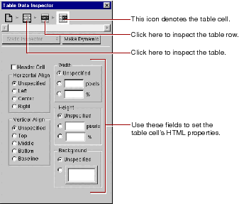

Editing With WebObjects Builder
PATH
WebObjects 4.0 Documentation >
WebObjects Tools and Techniques
 Table of Contents
Table of Contents  Previous Section
Previous Section
Inspecting Tables, Rows, and Cells
An HTML table (<TABLE>) is a hierarchical structure, which contains rows (<TR>); rows in turn contain cells (<TD>). When you select any of them, the Inspector shows the path from the selected element up through the page, and you can inspect any element in the path by clicking its icon. For example, if you select a table cell, you can inspect the cell (with the Table Data Inspector), the row, or the table itself.

You can set the HTML properties of any table element (for example, its height or width) using the Inspector.
Table of Contents  Next Section
Next Section